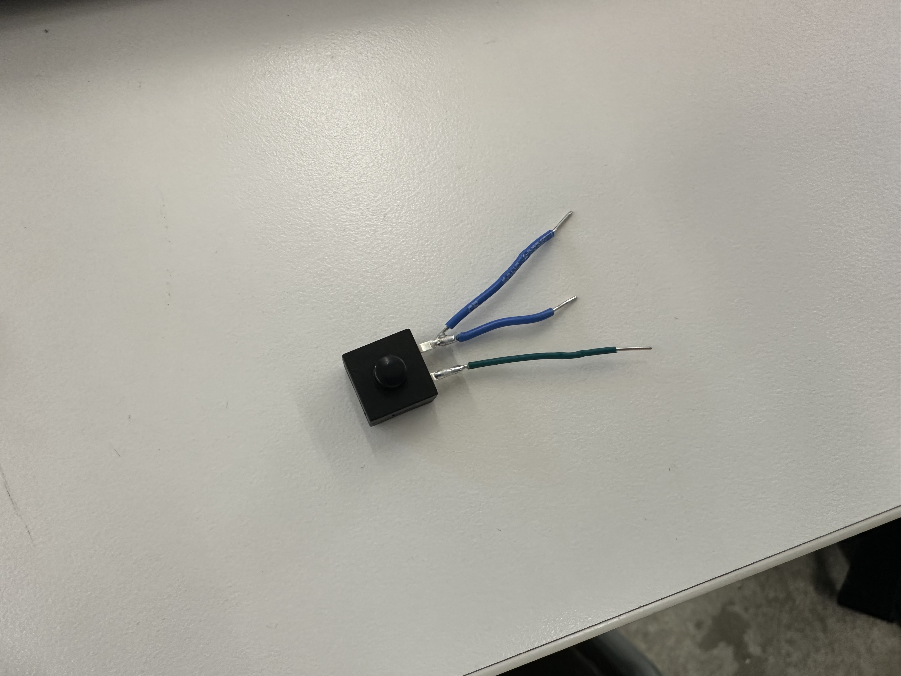
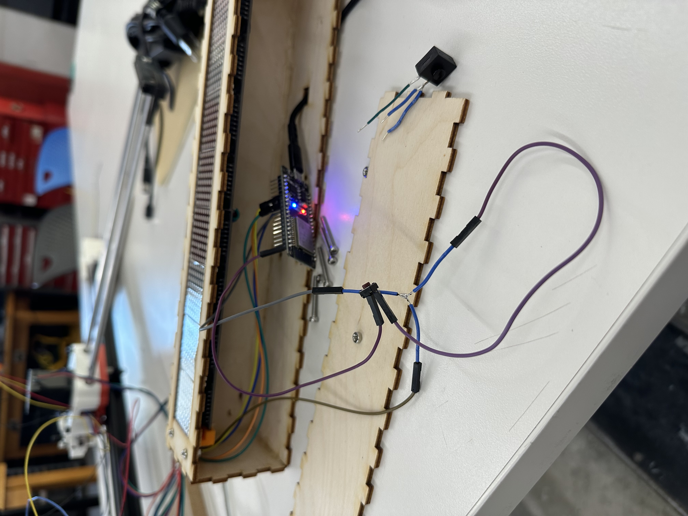

<div class="textcontainer typewriter-texture">
<p class="margin"> </p>
<h3>Week 9: Radio, WiFi, Bluetooth (IoT)</h3>
<h4>Assignment: Networking and Communication</h4>
<p>For my networking assignment, I decided to further refine the networking component of my final project. In the <a href="../07_outputs/index.html">MVP</a>, I used a web server to host the interface and an HTML server to communicate with the car display. However, this felt clunky and limiting, as I would need to host a server on my laptop on the same WiFi network as both the display and interface device, and relying on browser STT was finicky. Consequently, after the design review and consulting with course staff, I decided using Bluetooth Low Energy (BLE) would be the most feasible way to communicate with the device.</p>
<p>During the design review, the judges also asked about the necessity of having two displays. I then determined it would only make sense to have the display on the rear dashboard, given that it would be unsafe for a driver in the car in front to look at a front display through a rear-view mirror. Consequently, I am constraining the system to just one display.</p>
<p>Because browsers cannot support Bluetooth connection, I realized I would need to develop a mobile app. Here were the steps I outlined for implementing BLE:</p>
<ul>
<li>Figure out how to use BLE</li>
<li>Implement BLE communication in MVP code, using a BLE connection app to send text</li>
<li>Parsing JSON to receive speed and other setting in addition to text</li>
<li>Build application that can connect via Bluetooth and send JSON strings</li>
</ul>
<h4>BLE</h4>
<p>I started out by modifying the <a href="https://nathanmelenbrink.github.io/lab/networking/huzzah3.html" target="_blank">BLE tutorial code</a> to use Serial print text messages upon writes. I downloaded nRF to communicate with it.</p>
<pre><code><span class="keyword">class</span> MyCallbacks: <span class="keyword">public</span> BLECharacteristicCallbacks {
<span class="keyword">void</span> onWrite(BLECharacteristic *pCharacteristic) {
String message = pCharacteristic->getValue();
Serial.println(message);
}
};</code></pre>
<h4>BLE in MVP</h4>
<p>I then updated the MVP code to include the BLE characteristic callback use text to change the current message for display.</p>
<pre><code><span class="comment">// Callback for bluetooth message to display</span>
<span class="keyword">class</span> DisplayCallbacks : <span class="keyword">public</span> BLECharacteristicCallbacks {
<span class="keyword">void</span> onWrite(BLECharacteristic *pCharacteristic) <span class="keyword">override</span> {
String message = pCharacteristic->getValue();
<span class="keyword">if</span> (message.length() == <span class="number">0</span>) <span class="keyword">return</span>;
<span class="comment">// Update in future</span>
currentMessage = message;
numScrolls = <span class="number">1</span>;
currentPause = <span class="number">0</span>;
currentSpeed = <span class="number">25</span>;
completedScrolls = <span class="number">0</span>;
incomingMessage = <span class="keyword">true</span>;
Serial.print(<span class="string">"Received BLE message: "</span>);
Serial.println(currentMessage);
}
};</code></pre>
<p>Then in setup, I advertised the bluetooth device so that a Bluetooth scanner could communicate with it.</p>
<pre><code><span class="keyword">void</span> setup() {
Serial.begin(<span class="number">9600</span>);
ledDisplay.begin(); <span class="comment">// Start LED</span>
<span class="comment">// Begin BLE connection</span>
BLEDevice::init(<span class="string">"CarDisplay"</span>);
BLEServer *pServer = BLEDevice::createServer();
BLEService *pService = pServer->createService(SERVICE_UUID);
BLECharacteristic *pCharacteristic = pService->createCharacteristic(
CHARACTERISTIC_UUID,
BLECharacteristic::PROPERTY_WRITE
);
pCharacteristic->setCallbacks(<span class="keyword">new</span> DisplayCallbacks());
pCharacteristic->setValue(<span class="string">""</span>);
pService->start();
BLEAdvertising *pAdvertising = pServer->getAdvertising();
pAdvertising->start();
}</code></pre>
<p>I could then use nRF to send messages. This dramatically simplified the code because I no longer needed the WiFi functionality.</p>
<h4>Parsing JSON</h4>
<p>For parsing JSON, I added the <code>ArduinoJson</code> library and modified the callback to take a JSON string, which I could then send via nRF as <code>{"text":"Hi there"}</code>.</p>
<pre><code><span class="comment">// Callback for bluetooth message to display</span>
<span class="keyword">class</span> DisplayCallbacks : <span class="keyword">public</span> BLECharacteristicCallbacks {
<span class="keyword">void</span> onWrite(BLECharacteristic *pCharacteristic) <span class="keyword">override</span> {
String payload = pCharacteristic->getValue();
<span class="keyword">if</span> (payload.length() == <span class="number">0</span>) <span class="keyword">return</span>;
Serial.print(<span class="string">"Received BLE payload: "</span>);
Serial.println(payload);
StaticJsonDocument<<span class="number">256</span>> doc;
DeserializationError error = deserializeJson(doc, payload);
<span class="keyword">if</span> (error) {
Serial.print(<span class="string">"JSON parse failed: "</span>);
Serial.println(error.c_str());
<span class="keyword">return</span>;
}
<span class="comment">// Required field: text</span>
<span class="keyword">if</span> (!doc[<span class="string">"text"</span>].is<<span class="keyword">const char</span>*>()) {
Serial.println(<span class="string">"Missing required field: text"</span>);
<span class="keyword">return</span>;
}
currentMessage = String(doc[<span class="string">"text"</span>].as<<span class="keyword">const char</span>*>());
<span class="comment">// Handle other fields</span>
numScrolls = max(<span class="number">1</span>, doc[<span class="string">"repeat"</span>] | <span class="number">1</span>);
currentPause = max(<span class="number">0</span>, doc[<span class="string">"pause"</span>] | <span class="number">0</span>);
currentSpeed = max(<span class="number">1</span>, doc[<span class="string">"speed"</span>] | <span class="number">25</span>);
completedScrolls = <span class="number">0</span>;
incomingMessage = <span class="keyword">true</span>;
Serial.print(<span class="string">"Received BLE message: "</span>);
Serial.println(currentMessage);
}
};</code></pre>
<p>I also realized that I would want to account for connection and disconnection, allowing the device to become discoverable after the first pairing ends.</p>
<p>In setup, I added <code>pServer->setCallbacks(new DisplayServerCallbacks());</code> and then I added the following callbacks:</p>
<pre><code><span class="keyword">class</span> DisplayServerCallbacks : <span class="keyword">public</span> BLEServerCallbacks {
<span class="keyword">void</span> onConnect(BLEServer* pServer) <span class="keyword">override</span> {
deviceConnected = <span class="keyword">true</span>;
Serial.println(<span class="string">"Device connected"</span>);
}
<span class="keyword">void</span> onDisconnect(BLEServer* pServer) <span class="keyword">override</span> {
deviceConnected = <span class="keyword">false</span>;
Serial.println(<span class="string">"Device disconnected"</span>);
<span class="comment">// Allow connections again</span>
pServer->getAdvertising()->start();
Serial.println(<span class="string">"Restarted advertising"</span>);
}
};</code></pre>
<p>However, I then moved advertising to the main loop after a short delay because the BLE stack was not ready yet in onDisconnect so the advertising start was lost.</p>
<pre><code> <span class="comment">// Just disconnected</span>
<span class="keyword">if</span> (!deviceConnected && oldDeviceConnected) {
delay(<span class="number">200</span>); <span class="comment">// Delay is fine here</span>
BLEDevice::startAdvertising();
Serial.println(<span class="string">"Restarted advertising"</span>);
oldDeviceConnected = deviceConnected;
}</code></pre>
<p>This use of delay() is permittable because it only runs when a device is disconnected, so it does not slow down the system and hurt concurrency.</p>
<p>Additionally, I started tracking the connection ID so that we can forcibly disconnect Bluetooth clients later on if I wanted to.</p>
<pre><code><span class="keyword">uint16_t</span> connectionId = <span class="number">0</span>;</code></pre>
<h4>Building the Application</h4>
<p>I first needed to decide on a tech stack for the application. In the past, I had tried developing with Expo Go, but had run into issues with STT libraries or microphone access, as newer versions of Expo Go had compatibility issues. I decided to proceed with Reactive Native with TypeScript, and a Metro bundler setup, which I could then test using Xcode and my iPhone. I utilized the React Native BLE and Voice libraries, and for styling I used a Tailwind RN library, as well as Ionicons for icons. I utilized Windsurf for a lot of the setup and some of the initial development, but as in the past, made sure I understood how things worked, and made manual edits.</p>
<h5>Setup</h5>
<pre><code>npx @react-native-community/cli@latest init CarDisplayApp
cd CarDisplayApp
npm install react-native-ble-plx twrnc react-native-vector-icons @react-native-voice/voice
cd ios && pod install</code></pre>
<h5>Permissions</h5>
<p><strong>iOS:</strong> Bluetooth, microphone, speech recognition</p>
<p><strong>Android:</strong> Bluetooth + audio recording</p>
<h5>Core BLE Logic</h5>
<pre><code><span class="keyword">const</span> bleManager = <span class="keyword">new</span> BleManager();
<span class="keyword">const</span> [devices, setDevices] = useState<Device[]>([]);
<span class="keyword">const</span> [connectedDevice, setConnectedDevice] = useState<Device | <span class="keyword">null</span>>(<span class="keyword">null</span>);</code></pre>
<p><strong>Scan + filter:</strong></p>
<pre><code>bleManager.startDeviceScan(<span class="keyword">null</span>, <span class="keyword">null</span>, (_, device) => {
<span class="keyword">if</span> (device?.name?.includes(<span class="string">'CarDisplay'</span>)) {
setDevices(prev =>
prev.some(d => d.id === device.id) ? prev : [...prev, device]
);
}
});</code></pre>
<p><strong>Connect:</strong></p>
<pre><code><span class="keyword">const</span> connect = <span class="keyword">async</span> (device: Device) => {
<span class="keyword">const</span> d = <span class="keyword">await</span> device.connect();
<span class="keyword">await</span> d.discoverAllServicesAndCharacteristics();
setConnectedDevice(d);
};</code></pre>
<h5>Messaging</h5>
<pre><code><span class="keyword">const</span> send = <span class="keyword">async</span> () => {
<span class="keyword">const</span> payload = JSON.stringify({ text: message, repeat: <span class="number">1</span>, pause: <span class="number">0</span>, speed: <span class="number">25</span> });
<span class="keyword">await</span> connectedDevice?.writeCharacteristicWithResponseForService(
SERVICE_UUID,
CHARACTERISTIC_UUID,
toBase64(payload)
);
};</code></pre>
<h5>Voice Input</h5>
<pre><code>Voice.onSpeechResults = e => setMessage(e.value?.[<span class="number">0</span>] ?? <span class="string">''</span>);
<span class="keyword">await</span> Voice.start(<span class="string">'en-US'</span>);</code></pre>
<h5>UI</h5>
<p><strong>Disconnected:</strong> scan + device list</p>
<p><strong>Connected:</strong> message input, mic button, send</p>
<pre><code>{connectedDevice ? <MessageUI /> : <DeviceList />}</code></pre>
<h5>Styling</h5>
<ul>
<li>Tailwind via <code>twrnc</code></li>
<li>Icons via Ionicons</li>
</ul>
<h5>Build & Run</h5>
<pre><code>open ios/CarDisplayApp.xcworkspace</code></pre>
<ul>
<li>Enable automatic signing in Xcode</li>
<li>Select physical iPhone</li>
<li>Build and run</li>
</ul>
<p>In the demo section further down, I show the UI, as well as provide download links for main parts of the code and a link to the full repo.</p>
<h4>Stretch Goal: Forcibly Disconnecting</h4>
<p>As a stretch goal, I decided to add a button that when held for five seconds would forcibly disconnect a connected phone (I can later use this button for powering the device on and off once I have a rechargeable battery).</p>
<p>I added a button class for resetting:</p>
<pre><code><span class="keyword">class</span> Button {
<span class="keyword">int</span> pin;
<span class="keyword">bool</span> isPressed;
<span class="keyword">unsigned long</span> lastPressed;
<span class="keyword">public</span>:
Button(<span class="keyword">int</span> buttonPin) {
pin = buttonPin;
}
<span class="keyword">void</span> begin() {
pinMode(pin, INPUT_PULLUP);
}
<span class="keyword">bool</span> isReset() {
<span class="comment">// Check if currently pressed</span>
<span class="keyword">if</span> (digitalRead(pin) == LOW) {
<span class="comment">// If was already pressed, check if 5 seconds have passed. If not previously pressed, reset time</span>
<span class="keyword">unsigned long</span> curTime = millis();
<span class="keyword">if</span> (isPressed) {
<span class="keyword">if</span> (curTime - lastPressed >= <span class="number">5000</span>) {
isPressed = <span class="keyword">false</span>;
<span class="keyword">return true</span>;
}
} <span class="keyword">else</span> {
isPressed = <span class="keyword">true</span>;
lastPressed = curTime;
}
} <span class="keyword">else</span> {
isPressed = <span class="keyword">false</span>;
}
<span class="keyword">return false</span>;
}
};</code></pre>
<p>I updated the app to scan for resets, as well as search based on service UUID, which required advertising UUID.</p>
<pre><code>pAdvertising->addServiceUUID(SERVICE_UUID);
pAdvertising->setScanResponse(<span class="keyword">true</span>);</code></pre>
<p>To physically add the button, I realized that because my ESP32 only has one GND, I would need to get creative. I soldered another wire to the GND for the button so the button would connect to the GND wire for the display and to the ESP32 GND.</p>
<p></p>
<p>However, I then realized this is a latching switch (meaning it preserves it's 0 or 1 status). Consequently I switched (pun intended) to a momentary switch button and just soldered a 3 way wire setup for the GND.</p>
<p></p>
<h4>Updated Demo</h4>
<p class="margin"> </p>
<div class="flexrow">
<a id="btn" href="../13_finalproject/CarDisplayApp/App.tsx" download>Download App.tsx
</a>
</div>
<p class="margin"> </p>
<p class="margin"> </p>
<div class="flexrow">
<a id="btn" href="../13_finalproject/bluetooth_connection.ino" download>Download Arduino Code
</a>
</div>
<p class="margin"> </p>
<p>The full codebase is <a href="https://github.com/calebcapoccia/ps70/tree/main/13_finalproject" target="_blank">here</a>.</p>
<p>This is what the new full experience looks like (with no web servers running!)</p>
<div style="width:100%; max-width:800px; margin: 20px auto;">
<div style="position: relative; padding-bottom: 56.25%; height: 0; overflow: hidden;">
<iframe
style="position: absolute; top: 0; left: 0; width: 100%; height: 100%;"
src="https://www.youtube.com/embed/UDNO3XOB1e8"
frameborder="0"
allow="accelerometer; autoplay; clipboard-write; encrypted-media; gyroscope; picture-in-picture"
allowfullscreen>
</iframe>
</div>
</div>
</div>